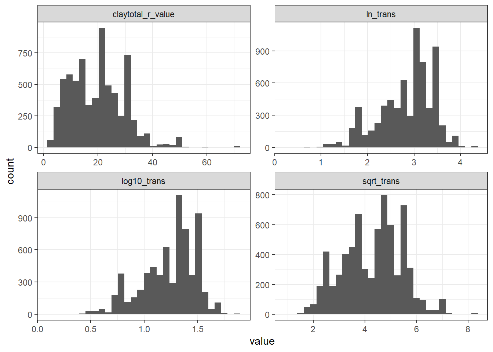
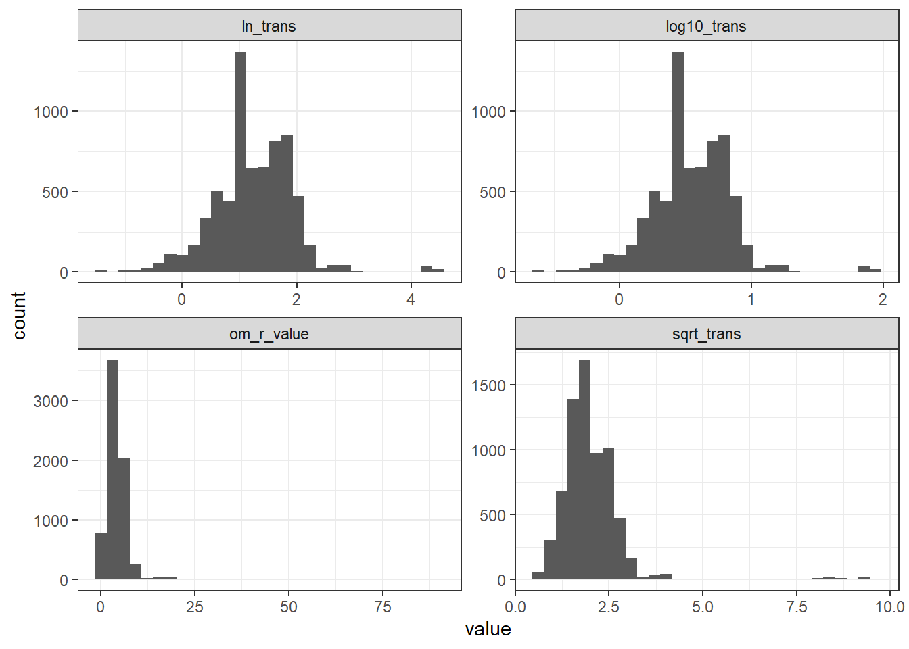
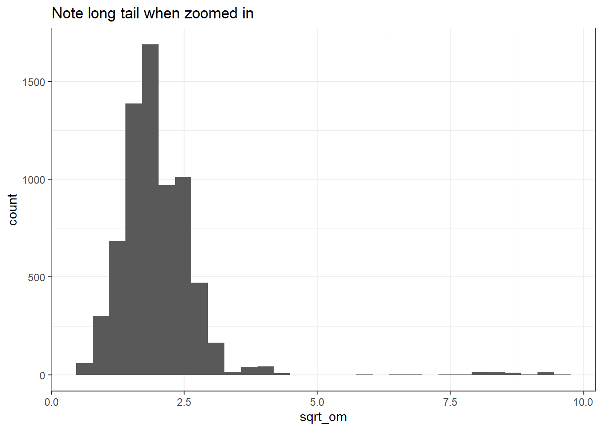
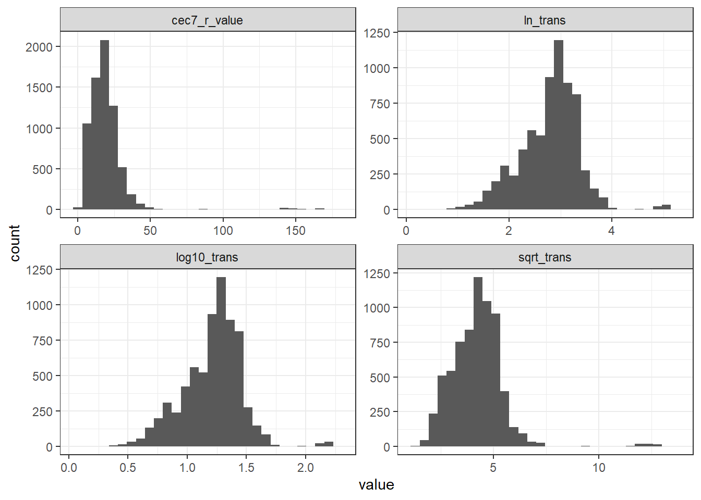
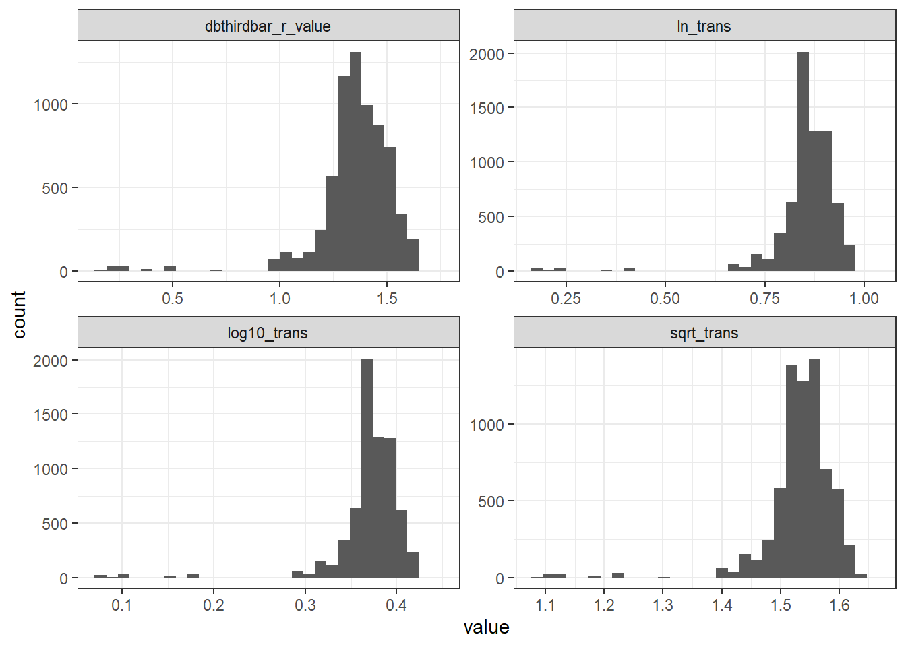
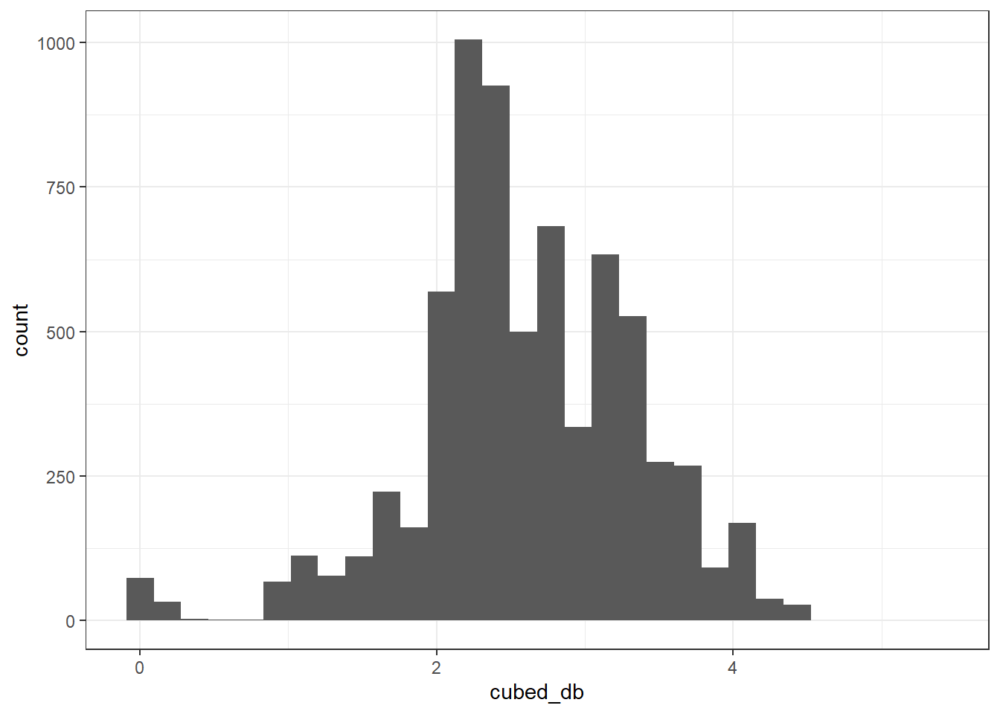
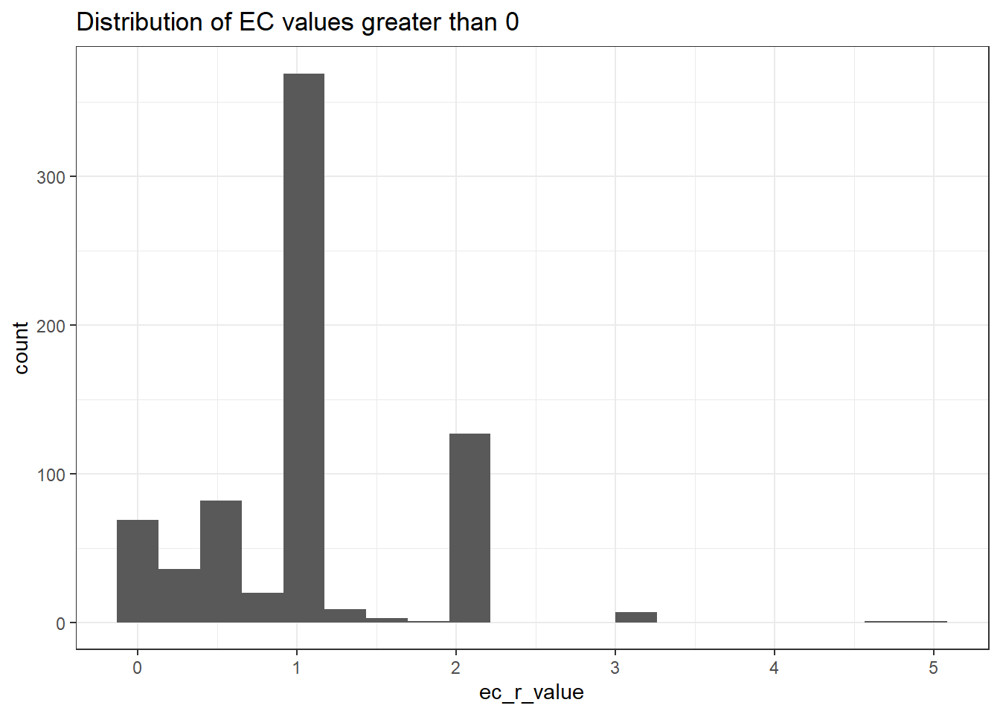
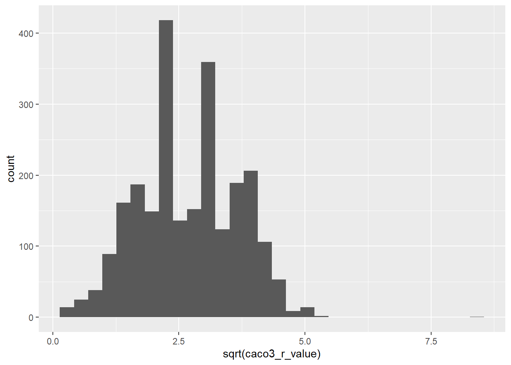
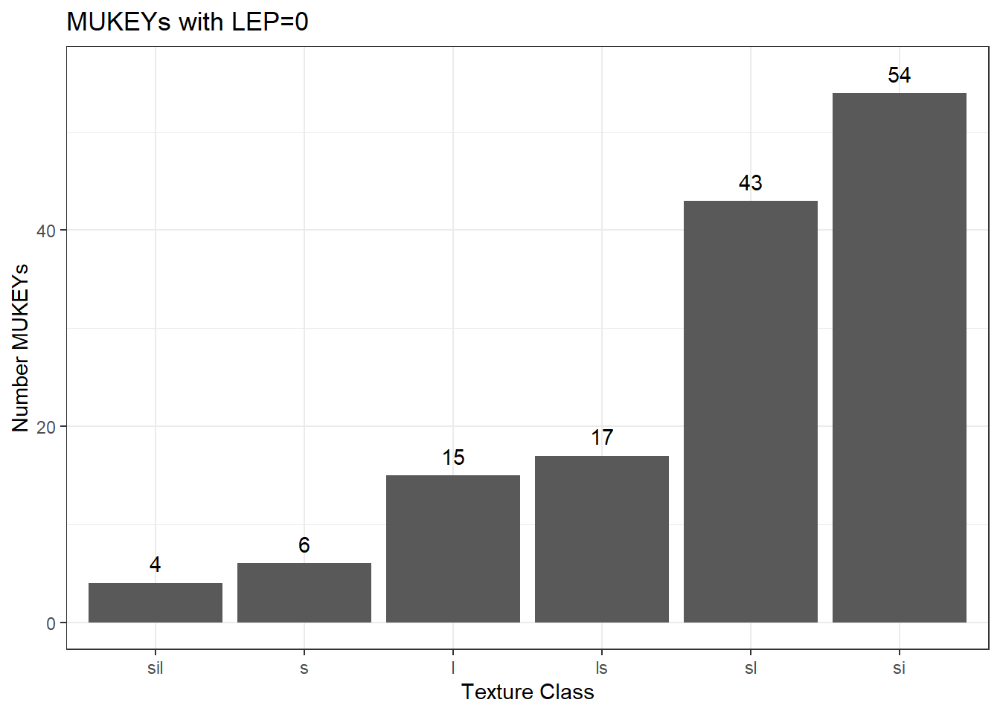

So it makes sense to me that we would want to apply transformations on our variables with skewed distributions, but it has been surprisingly hard to find more info about this in the textbooks and tutorials I’ve found on k-means. Might need to continue looking. Because we are going to standardize / scale the data by subtracting the mean and dividing by 1 standard deviation, I think it makes sense that we’d want something close to normal for the starting distribution (since the mean is not really a helpful summary statistic for data that is very skewed…).
I made plots to review the best transformations for normalizing the soil property data I will be including in my k-means clustering. Here, I summarize my decisions based on the plots below:
Clay: square root
Organic matter: log10 or ln
CEC: log10 or ln
Bulk density: cubed (dB ^ 3)
EC: None
pH: None
Carbonates: square root
LEP: ln OR log10 (note that since we are setting LEP=0 values to 0.5, we don’t have to worry about adding an offset here before doing the log transformation).
Ksat: log10 or ln
AWC: log10 or ln
“In order to weight these properties equally in the analysis and de-emphasize extreme values, some data were log transformed and all data were rescaled to produce standardized distributions with means equal to 0 and standard deviations equal to 1.”
# relates mukeys to cokey(s), only complete cases# that have sufficient data availability ("include")# from 07-map-unit-agg.qmdcmp_lookup <-read_csv("data/key_cokey_mukey_complete_cases_include.csv")cmp_details <-read_csv("data/component_list.csv")cmp_slab <-read_csv("data/wide_slab_aggregated_soil_props_20220912.csv")mukey_details <-read_csv("./data/target_mapunit_table.csv")
7.2 Zero values
A key consideration for these transformations is whether we have zero values, and whether to set very low values to zero.
In cases where we have lots of zero values (carbonates would be a good example), think about whether we need to add a constant before applying a transformation in order to make the distribution more normal.
In terms of setting very low values to zero, need to think about this more in terms of the variables we have. I don’t have much experience with EC data, but Devine et al. did this for EC, setting anything <1.5 to zero in order to disregard differences in this low range.
Let’s count the zeroes, keeping only variables that have zero values:
For LEP, check textures of the samples with LEP = 0. If loamy sands or sands, this might be OK?
m %>%summarise(across(where(is.numeric), ~sum(.x ==0))) %>%pivot_longer(cols =everything()) %>%filter(value >0)
7.3 Function for transformation plots
This function allows us to compare multiple transformations on the same variable in one faceted plot. The arguments that end in _adjust are options to add a constant to deal with 0 values that would otherwise give us errors / infinite values.
Here, I think the square root transformation looks the best.
plot_transformations(var = claytotal_r_value, df = m)

7.5 Organic Matter
At first I thought the square root looked good here, but if you zoom in (second plot), it has a long tail (probably histosols). I would pick either the log10 or the ln.
plot_transformations(var = om_r_value, df = m)

m %>%mutate(sqrt_om =sqrt(om_r_value)) %>%ggplot() +geom_histogram(aes(x = sqrt_om)) +theme_bw() +ggtitle("Note long tail when zoomed in")
`stat_bin()` using `bins = 30`. Pick better value with `binwidth`.

7.6 CEC
Would pick log10 or ln here.
plot_transformations(var = cec7_r_value, df = m)

7.7 Bulk Density
Looking at the untransformed values, this is skewed left (others have been skewed right)
None of these transformations in the facet plot look great to me, I also tried squaring and cubing the values, I think cubing looks the best. However, this brings up the idea of interpretability, and what our transformations mean for interpreting the clusters. By squaring the bulk density values, I’m bringing low values closer together while spreading the higher values further apart. This deals with the skewness, but is this a reasonable thing to do from a interpretation perspective? It means that at the higher ranges of bulk density, values that are the same distance apart on the regular scale (say a 0.1 g/cm3 difference) are “more different” compared to values that are 0.1 g/cm3 different at the low end of our spectrum.
# adding one here so we don't get any negative values # I'm not sure this is totally necessary? Think about# what happens when we rescale, plot_transformations(var = dbthirdbar_r_value,df = m,log10_adjust =1,ln_adjust =1,sqrt_adjust =1)

# I think this transformation looks the bestm %>%mutate(cubed_db = dbthirdbar_r_value^3) %>%ggplot() +geom_histogram(aes(x = cubed_db)) +theme_bw()
`stat_bin()` using `bins = 30`. Pick better value with `binwidth`.

7.8 EC
No transformation for now, but need to think about if we have a threshold where we set everything below to zero. Consider setting our threshold at 1, but first look more closely at the MUKEYs with values =1, decide whether or not to include these. See Section 8.6.3 and the QGIS project in _qgis_files
The vast majority of our EC values are 0, approximately 89.6 . Of the values that are >0, most are 1.5 dS/m or less, which Devine et al. set to zero. So it might be worth considering whether we even include EC? I looked up more info about the range of ECs that are a concern for crop production, perhaps that could inform our decision. See Section 7.8.2 .
Let’s take a look at the EC values that are greater than zero:
m %>%filter(ec_r_value >0) %>%ggplot() +geom_histogram(aes(x = ec_r_value), bins =20) +theme_bw() +ggtitle("Distribution of EC values greater than 0")

Want to look more closely at the spatial distribution of these non-zero EC values, see Section 8.6.3 . To facilitate that, here I am making a simple lookup table of the MUKEYs and an “EC category” so I can make a simple map of where these non-zero values are.
ec_cat <- m %>%select(mukey, ec_r_value) %>%mutate(ec_cat =case_when( ec_r_value ==0~1, (ec_r_value >0& ec_r_value <1) ~2, ec_r_value ==1~3, ec_r_value >1~4 ))write_csv(ec_cat, "data/ec_category_mukey.csv")mukey_ec1 <- m %>%filter(ec_r_value ==1) %>%select(mukey)df_mukey_ec1 <-left_join(mukey_ec1, mukey_details, by ="mukey")mukey_ecless1 <- m %>%filter(ec_r_value >0& ec_r_value <1) %>%select(mukey)df_mukey_ecless1 <-left_join(mukey_ecless1, mukey_details, by ="mukey")
7.8.2 Crop tolerance ratings for EC
The line for saline or saline-sodic soils is 4 dS / m. A factsheet I found from NDSU online called “Corn Response to Soil Salinity” (saved in _refs) reports that corn yields started to decline above 1.96 dS/m (on sandy loam soils) and above 2.95 dS/M for silty clay loams. Crop response to salinity is related to soil texture; “coarser textured soils may not contain as much water as finer textured soils, making the salts more potent. So, if you have a sandy loam, your crop salt tolerances will be lower than if you have a silty clay loam”.
These tables are all taken from the excellent “Managing Saline Soils in North Dakota” fact sheet by David Franzen, published in 2003. Helpful context for interpreting these EC values. In general, it looks like vegetable crops are more sensitive at lower levels of EC compared to some of the major grain cash crops like corn, soybeans.
7.9 pH
I think this one is fine without a transformation.
m %>%filter(caco3_r_value >0) %>%ggplot() +geom_histogram(aes(x =sqrt(caco3_r_value)))
`stat_bin()` using `bins = 30`. Pick better value with `binwidth`.

7.11 LEP
Would pick log10 or ln here, recall that since we are setting LEP=0 to 0.5 (see Section 8.6.4 ), don’t need to worry about adding an offset before the log.
# setting LEP = 0 as it's own class here# because I want to investigate where these are on a maplep_cat <- m %>%select(mukey, lep_r_value) %>%mutate(lep_cat =case_when( lep_r_value ==0~0, lep_r_value <3~1, (lep_r_value >=3& lep_r_value <6) ~2, (lep_r_value >=6& lep_r_value <9) ~3, lep_r_value >=9~4 ))write_csv(lep_cat, "data/lep_category_mukey.csv")# quick tabulation of number mukeys in each grouplep_cat_desc <-c("Zero", "Low", "Moderate", "High", "Very High")lep_cat %>%group_by(lep_cat) %>%summarise(n =n(), .groups ="drop") %>%mutate(lep_desc = lep_cat_desc) %>%select(lep_desc, n, lep_cat)
After exploring maps of LEP on 2022-09-19, Nic and I decided to set anything with LEP = 0 to 0.5, which keeps it in the lowest part of the “low” range. When we looked at these values across the state, they were discontinuous across counties, and the total area with LEP=0 is small. Suspect these aren’t
mukey_lep_zero <- m %>%filter(lep_r_value ==0) %>%select(mukey)# how many MUKEYs have LEP = 0?nrow(mukey_lep_zero)
[1] 117
# are the MUNAMES a clue to why LEP=0?df_mukey_lep_zero <-left_join(mukey_lep_zero, mukey_details, by ="mukey") %>%select(mukey, muname, mukind)df_mukey_lep_zero
# 22 of the 75 unique map unit NAMES contain "muck"unique(df_mukey_lep_zero$muname) %>%str_detect(string = ., pattern ="muck") %>%sum()
[1] 22
# 30 of the 75 unique map unit NAMES contain "sand"unique(df_mukey_lep_zero$muname) %>%str_detect(string = ., pattern ="sand") %>%sum()
[1] 30
# these munames don't contain "sand" or "muck"df_mukey_lep_zero %>%filter(!str_detect(muname, "muck"),!str_detect(muname, "sand"))
Let’s take a look at the texture classes:
# rows are added because we have some MUKEYs with # multiple components lepzero_cokey <-left_join(df_mukey_lep_zero, cmp_lookup, by ="mukey")lepzero_cmp <-left_join(lepzero_cokey, cmp_slab, by =c("cokey"))cmp_tax <- cmp_details %>%select(mukey, cokey, contains("tax"))lz <-left_join(lepzero_cmp, cmp_tax, by ="cokey")lepzero_ssc <- lz %>%select(cokey, sandtotal_r_value, silttotal_r_value, claytotal_r_value) %>%mutate(texcl = aqp::ssc_to_texcl(sand = lz$sandtotal_r_value,clay = lz$claytotal_r_value))lepzero_ssc %>%group_by(texcl) %>%count() %>%mutate(lab_ypos = n+2) %>%ggplot() +geom_col(aes(x =reorder(texcl, n), y = n)) +geom_text(aes(x = texcl, y = lab_ypos, label = n)) +theme_bw() +xlab("Texture Class") +ylab("Number MUKEYs") +ggtitle("MUKEYs with LEP=0")

And also look at the soil taxonomy:
# great groupslz %>%group_by(taxgrtgroup) %>%count() %>%arrange(desc(n))